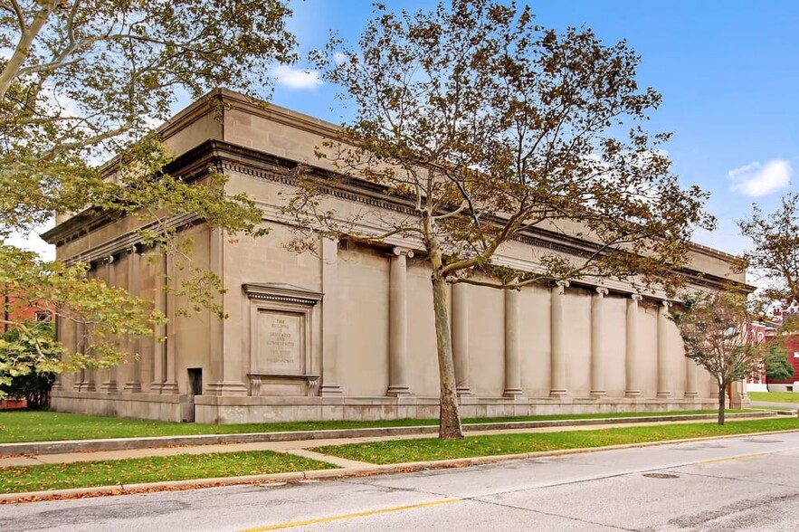
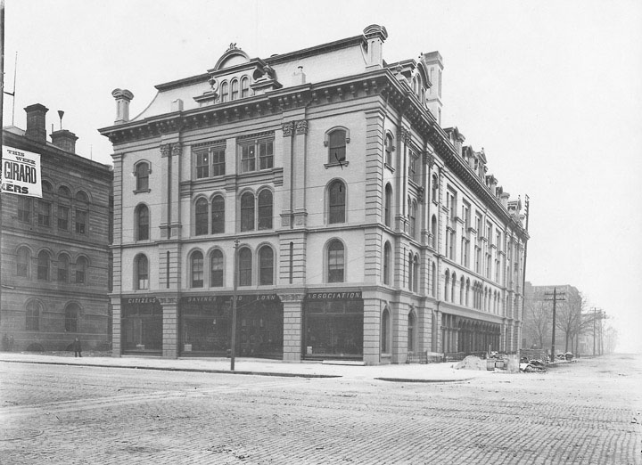
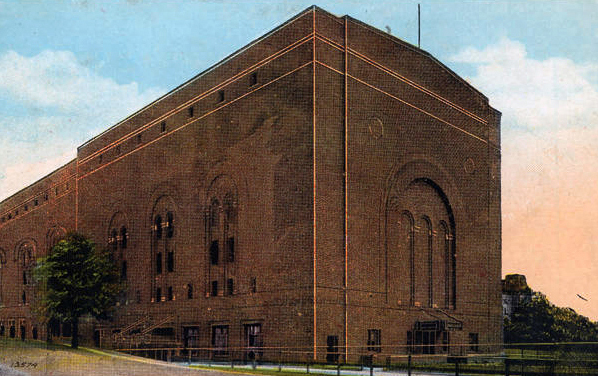

<div class="grid-container">
    <div class="grid-row">
        <div class="grid-col-12 centered">
            <h2>A Brief History of Forest City Lodge #388</h2>
            <h3>Free and Accepted Masons, Ohio</h3>
        </div>
        <div class="grid-col-12">
            <hr>
            <h4 class="centered">Chartered October 16th, 1867</h4>
            <br/>
            <p class="usa-prose">
                Two years following the tragic death of President Abraham Lincoln, Forest City Masonic Lodge was born.
                Sponsored by Bigelow Lodge #243, a dispensation was granted by Grand Master Thomas Sparrow on March 28th, 1867.
                Two days later, Forest City Lodge U.D. held its first meeting in the Masonic Hall on Franklin Street, and adopted a code of By-Laws.
            </p>
            <div class="centered">
                <figure>
                    
                    <figcaption>The Masonic Hall on Franklin Street</figcaption>
                </figure>
            </div>
            <br/>
            <p class="usa-prose">
                The first meeting was presided over by Elisha T. Ellsworth, a bookkeeper, and a Past Master of Meridian Sun Lodge #226, located in West Richfield, Ohio.
                Following a charter being granted on October 16th, 1867 by the Grand Lodge of Ohio at its Cincinatti meeting,
                Worshipful Brother Ellsworth was the first elected and installed Master of Forest City Lodge.
            </p>
            <p class="usa-prose">
                As Cleveland grew and changed, so did its members change and relocate about the city.
                In time, the number of East Side members was so predominate that a vote was held in November of 1873, 
                which resulted in the meeting place being moved to Case Hall, located at East 3rd Street and Superior Avenue.
            </p>
            <div class="centered">
                <figure>
                    
                    <figcaption>Case Hall, early 1900s. Western Reserve Historical Society</figcaption>
                </figure>
            </div>
            <p class="usa-prose">
                This location remained our home for almost a quarter of a century.
                In 1896, Forest City Lodge, with other centrally located Masonic bodies, moved into the Masonic Temple on East 6th Street and Superior Avenue.
                This is where we remained until the site was sold to make way for the new Federal Reserve Bank of Cleveland building.
            </p>
            <p class="usa-prose">
                For seven months thereafter, we met at the Newburgh Masonic Temple.
                On September 1st, 1921, the new Masonic Temple at East 36th Street and Euclid Avenue was completed, and it became our new home.
                Here we remained through the terrible depression years, the years of World War II, and through the post-war years, until 1959.
            </p>
            <div class="centered">
                <figure>
                    
                    <figcaption>Cleveland Masonic Temple</figcaption>
                </figure>
            </div>
            <p class="usa-prose">
                During this period of Forest City Lodge history, a glimpse of the true character of the Lodge came to light.
                The depression inflicted heavy financial losses upon many of our members, and many would have been suspended for non-payment of dues.
                The Brethren of Forest City Lodge demonstrated their Masonic Charity, and all worthy, distressed members during those years, and right up to the present time, were kept in good standing.
            </p>
            <p class="usa-prose">
                On October 16th, 1942, Worshipful Master Julius A. Negin called a special meeting of the Lodge for the purpose of celebrating the 75th Anniversary of Forest City Lodge.
                Wor. Bro. Negin later became the Chairman of the first blood bank established by any Masonic Lodge in the state of Ohio.
            </p>
            <p class="usa-prose">
                In October of 1955, Forest City Lodge, together with Golden Square Lodge, purchased land at the corner of Warrensville Center and Farnsleigh Roads in Shaker Heights for the purpose of constructing a new Masonic Temple.
                Ground breaking ceremonies were held on February 12th, 1958.
                Grand Master Andrew J. White, Jr. laid the cornerstone of our magnificent Temple on June 8th, 1958.
                The official dedication was conducted on February 28th, 1959.
            </p>
            <p class="usa-prose">
                The first regular meeting held in our new home was the installation of officers on January 14th, 1959.
            </p>
            <p class="usa-prose">
                After paying its share of the cost of the new building, Forest City Lodge found itself with an excess of Building Fund contributions.
                In 1966, the Brethren voted to use these funds for Masonic Charity.
                As a direct result of this decision, two rooms in the Ohio Masonic Home in Springfield were completely furnished by the Lodge.
            </p>
            <p class="usa-prose">
                To underscore the true meaning of the religious season, around Christmas and Hanukkah, Forest City Lodge holds an annual Brotherhood Night.
                This event was started in December of 1973 by Worshipful Brother Bert M. Tobin, 33&deg;.
                This event has received statewide recognition.
            </p>
            <p class="usa-prose">
                Since June 1979, the annual observance of Table Lodge has been our final meeting before spring break.
                Inspired messages from noteworthy Masons and a generous outpouring from the "Box of Fraternal Assistance" has enriched many worthwhile charities and made this an evening of good fellowship enjoyed by all.
            </p>
            <hr>
            <h4 class="centered">Concerning Golden Square Lodge</h4>
            <p class="usa-prose">
                On January 20th, 1921, at the then downtown Masonic Temple, on the corner of East 6th Street and Superior Avenue, the preliminary formation of Golden Square Lodge took place.
                54 names were obtained on the first petition.
                At successive meetings, the matters incident to organizing a new Lodge was attended to.
            </p>
            <p class="usa-prose">
                On Thursday, October 20th, 1921, dispensation of the Grand Lodge was granted.
                The last preliminary meeting was held on Monday, October 31st, 1921.
                On Thursday, October 19th, 1922, a formal proclamation was made at the Grand Lodge of Ohio granting its charter, with the number 679, definitely fixing our order among sister Lodges in the State of Ohio.
            </p>
            <p class="usa-prose">
                The roster showed 85 Charter Members. 
                Consecration of Golden Square Lodge took place in the Doric Room of the new Masonic Temple at 3615 Euclid Avenue on Monday, October 30th, 1922.
                64 years later, on April 1st, 1986, Golden Square Lodge consolidated its 356 members with the 800 members of Forest City Lodge, and returned their charter to the Grand Lodge of Ohio.
            </p>
            <hr>
            <p class="usa-prose">
                With the merger of Golden Square, Forest City Lodge became the owner of 75% of the shares of the Shaker Masonic Temple.
                Lodge consolidations and the movement of tenants to other Masonic facilities had the Shaker Masonic Temple looking for other tenants.
                Unity Church became a prime tenant, but this income was not sufficient to lessen the financial burden that Forest City had to bear as the majority owner.
                In 1999, Unity Church approached the building association about buying the facility.
                After lengthy negotiations, the sale was approved and Forest City Lodge moved as a tenant to the Lyndhurst Masonic Center, located at 5516 Mayfield Road, Lyndhurst, Ohio 44124.
            </p>
            <p class="usa-prose">
                Forest City Lodge is now over {{ fclAge }} years old and remains a vibrant, active, and flourishing Lodge that has weathered the good times and the bad.
                With your Masonic efforts, we will prosper into the 21st century and beyond.
            </p>
            <hr>
            <br/>
        </div>
    </div>    
</div>
